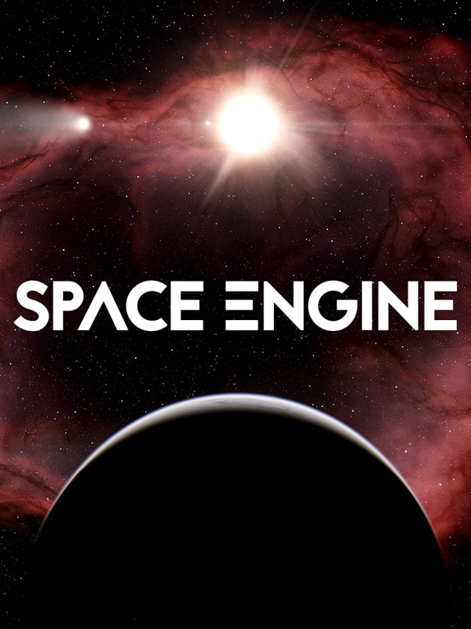

SpaceEngine
SpaceEngine
Details
|  | |
| Spielzeit | 17h 13m 0s |
| Letzte Aktivität | 08.04.2021 1:18:37 |
| Hinzugefügt | 04.11.2021 0:34:07 |
| Modifiziert | 12.12.2022 1:13:20 |
| Fertigstellungsstatus | Gespielt |
| Bibliothek | Steam |
| Quelle | Steam |
| Plattform | PC (Windows) |
| Veröffentlichungsdatum | 11.06.2019 |
| Community Bewertungen | 93 |
| Kritiker Punkte | |
| Benutzerwertung | |
| Genre | Casual Indie Simulation |
| Entwickler | Vladimir Romanyuk |
| Verleger | Vladimir Romanyuk |
| Eigenschaft | Controller Support Single Player VR Support Workshop |
| Links | Communityhub Diskussionen Guides Neuigkeiten Shopseite PCGamingWiki Workshop |
| Tag | Atmospheric Casual Colorful Education Exploration Family Friendly Flight Indie Open World Procedural Generation Realistic Relaxing Sandbox Science Sci-fi Simulation Single Player Space Space Sim VR |
Beschreibung
SpaceEngine is a 1:1 scale science-based Universe simulator, featuring billions upon billions of galaxies, nebulae, stars, and planets, all shown at their full real-world scale. Explore Earth and our neighboring worlds in the Solar System, orbit a black hole in a galaxy billions of light-years away, or visit anything in between seamlessly, with no transitions.

All of time and space are yours to explore – cruise between the stars at a million times the speed of light, and accelerate time to watch the orbital motions of a thousand worlds play out before your eyes. Every planet you encounter in your journey will feature procedural 3D terrain with detailed textures. Everything you see in the sky – stars and galaxies, planets and moons, asteroids and comets, black holes and neutron stars, star clusters and nebulae – are yours to explore at the press of a button.

Spacecraft with Newtonian physics and pilot-assist autopilot features (in early development but fully usable) are yours to fly anywhere in the universe in the Flight Simulator mode. SpaceEngine is also very friendly for creators of mods and add-ons – create your own planets, star systems, even galaxies, import your own spacecraft models, create custom GUI skins, and more, all easily sharable with others.
With SpaceEngine, the possibilities are limitless.

SpaceEngine Planetarium capabilities:

All of time and space are yours to explore – cruise between the stars at a million times the speed of light, and accelerate time to watch the orbital motions of a thousand worlds play out before your eyes. Every planet you encounter in your journey will feature procedural 3D terrain with detailed textures. Everything you see in the sky – stars and galaxies, planets and moons, asteroids and comets, black holes and neutron stars, star clusters and nebulae – are yours to explore at the press of a button.
Spacecraft with Newtonian physics and pilot-assist autopilot features (in early development but fully usable) are yours to fly anywhere in the universe in the Flight Simulator mode. SpaceEngine is also very friendly for creators of mods and add-ons – create your own planets, star systems, even galaxies, import your own spacecraft models, create custom GUI skins, and more, all easily sharable with others.
With SpaceEngine, the possibilities are limitless.
SpaceEngine Planetarium capabilities:
- Astronomy
All types of celestial objects are represented: galaxies, nebulae, stars and star clusters, planets and moons, comets and asteroids. Known celestial objects are represented using data from catalogs: galaxies (NGC/IC), stars (HIPPARCOS), star clusters, nebulae, and planets (Solar System and known extrasolar planets). Regions of space not yet cataloged feature procedurally generated objects: galaxies, stars, star clusters, nebulae, and planetary systems. - Controls
You are free to move around the universe – travel seamlessly between any object and any distance, from surface to orbit to interstellar and intergalactic space. Moving through space is as easy as "click and go", as well as game-style free flight using the WASD keys or a gamepad. Also, time travel is possible: you can accelerate, decelerate, or reverse the flow of time, and jump to a specified date. Detailed interactive tutorials will familiarize you with the controls. - Graphics
Volumetric 3D models of galaxies and nebulae with interstellar dust clouds, and 3D landscapes on planets and stars. For many Solar System bodies, actual data from space probes is used, with huge, high-resolution texture packs available as free DLC. For unmapped and procedural planets, the surface is generated procedurally using your computer's GPU. Other features include realistic atmospheric scattering, eclipse shadows, animated auroras and comet tails, and physically-based light warping near black holes and neutron stars, with animated accretion disks and jets.
- Physics
Realistic and physically-based generation of procedural objects (galaxies, star systems, planets) and their physical properties (mass, radius, temperature, atmospheric parameters, etc). The orbital motion of planets, moons, and stars in multiple-star systems are accurately calculated and displayed. Realistic space ship design concepts and physics: orbital motion, atmospheric flight model, and Alcubierre warp drive physics. - Virtual reality
SpaceEngine supports Oculus (via native library) and SteamVR (HTC Vive, Valve Index, WMR and other headsets). Support of VR controllers is partial: you can select objects with one controller and move around with the other one. Please note that VR support is still a work in progress, and new users should become familiar with the program in 2D before trying to use VR. - Sound
Original background music tracks made by many authors, with context-sensitive playback. Sound effects for planetary environments and space ships are in development. - Tools
Built-in tutorials will help you start using the Planetarium. Search for celestial objects by name and search for the nearest star systems. Browse the cosmos using a scalable Universe map and planetary system chart. Saving, exporting, and importing of locations is supported, which can easily be shared between users. The program keeps an automatic journal of objects you have recently visited. Learn every detail about the objects you find using the built-in “Wiki” info system, with additional hand-written descriptions of many known objects. Display the orbital paths of celestial objects, labels and markers, constellations, and other informational tools. - Multi-language support
Currently SpaceEngine is available in English, German, French, Italian, Spanish, Dutch, Finnish, Swedish, Croatian, Czech, Polish, Ukrainian, Russian, Catalan, Chinese, Japanese, Korean languages. Many new localizations are under development. Only localizations which are 100% complete are displayed on the Steam store page, but you can enable others in-game. - Modding
SpaceEngine supports creating and importing user add-ons: catalogs, models and textures for deep space objects, planets, and space ships. Spacecraft models, representing both real and fictional designs – including from popular sci-fi franchises – are commonly imported and shared by the community on the Steam Workshop.